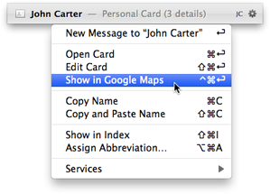
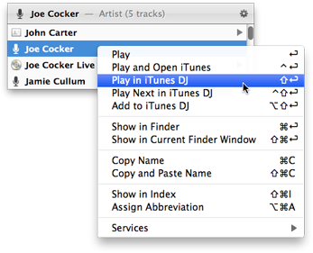
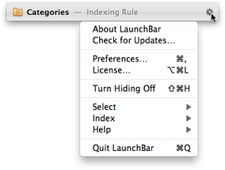

Actions
Once you’ve
selected an item in LaunchBar, you can perform various actions with that item. You can simply open it by pressing Return or via
Instant Open, but you can also drag it to some other application, drop files, folders or URLs onto the selected item, copy the item’s file path or address to the clipboard, etc.
Common Tasks
- Press Return to open the selected item.
- Alternatively, use Instant Open to open the item even more quickly.
- Press Command-Y or hit the space bar to preview the selected item with Quick Look.
- Press Command-Return to reveal the selected item. Files and folders will be shown in Finder, contact items (contact cards, email addresses, phone numbers, …) will be revealed by opening the corresponding card in Contacts.app.
- Use the left/right arrow keys to navigate to related items (folder contents, contact details, album tracks, etc.).
- Press the Tab key to send the item to a desired target.
- Press Command-D to “drag and drop” the current Finder selection onto the selected item in LaunchBar.
- Press Command-I to open the “Get Info” window for the selected item in Finder.
- Press Command-T to open a new Terminal window for the selected folder.
- Press Command-Shift-I to reveal the selected item in the index window.
Action Menu
When you click (or right click) the selected item, you get a menu that contains actions specific to this particular item. So when you’ve selected a file, it contains actions such as Rename or Move to Trash. When you’ve selected a song, it contains actions like Play in iTunes DJ or Show in iTunes. This menu can also be opened with Command-Control-Right Arrow.

To get the Action menu for another item in the search result menu, press the Control key and click that item, or just click it with the right mouse button.

LaunchBar Menu
In contrast to the action menu, clicking the gear wheel icon at the right end of the bar opens a static menu, independent from the current selection. It contains commands that are related to the LaunchBar application itself, such as opening the Preferences, accessing the Help, or selecting new items. The LaunchBar menu can also be opened with Control-Option-Right Arrow.

This menu is basically a copy of LaunchBar’s main menu bar. Its purpose is to provide access to these main menu commands in cases where the menu bar is not visible, for example when running LaunchBar without a Dock icon, which also hides its menu bar.